Knittr
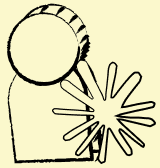
Personlig prosjektDesignet av meg, kodet av AI VarighetDesignet og bygget på én dag, 1. oktober 2026
VarighetDesignet og bygget på én dag, 1. oktober 2026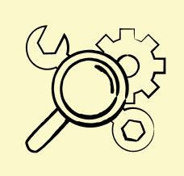
VerktøyFigma og Claude Code, koblet sammen gjennom Figmas MCP-integrasjon
Knittr er et nettbasert verktøy for å tegne strikkemønstre. Du lager små mønsterruter, swatcher, og maler dem utover et plagg i riktig strikkefasthet, med økninger og fellinger.
Min rolle
Jeg er designer, ikke utvikler. Knittr er vibe-kodet: all koden er skrevet av AI-assistenten Claude. Min jobb var den samme som designerens alltid er: å bestemme hva verktøyet skal være, kjenne etter om det føles riktig, og si fra når det ikke gjør det.
Jeg designet komponentene, ikonene og logoen i Figma og styrte hver endring gjennom en samtale. Appen er på engelsk, slik den ble laget. Se koden på GitHub.
Trykk på bildet for å prøve Knittr selv.
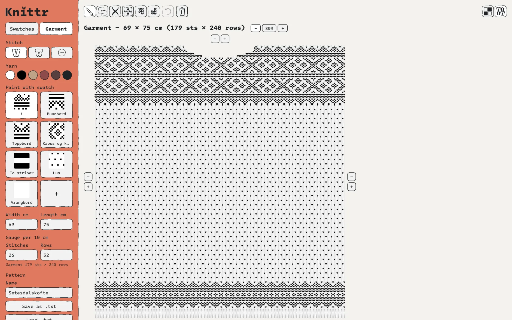
Slik jobbet vi
Fra et regneark til mitt eget verktøy for strikkedesign
Steg 1: Strikkemønstrene mine levde i et regneark som ikke visste noe om strikking
Før dette prosjektet tegnet jeg mønstrene mine i Excel: én celle per maske, farget for hånd, med fellinger markert som røde linjer. Regnearket kan ikke gjenta et mønster, vise hvordan det blir strikket, eller regne om centimeter til masker.
DerforKnittr skulle kunne gjenta mønstre, vise strikkede masker og regne i masker. Det er verktøyet jeg selv manglet.
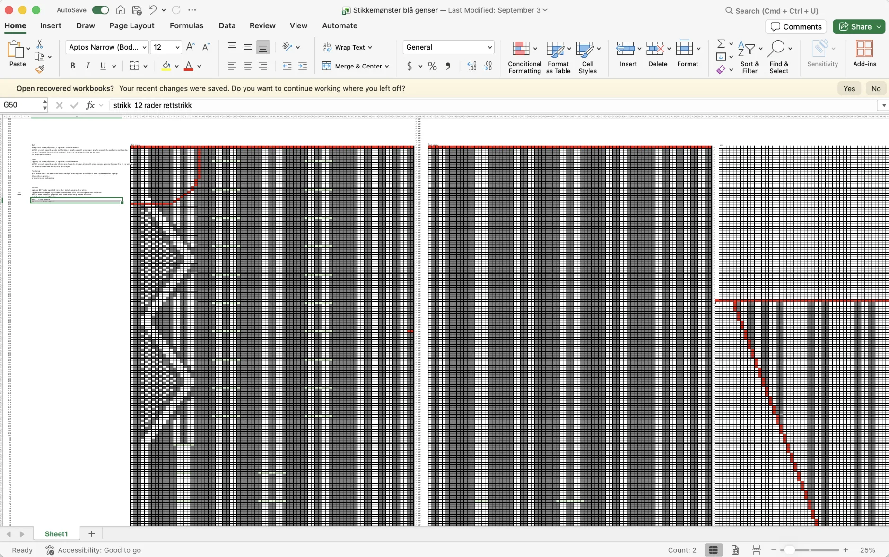
Slik har jeg laget strikkemønstre før: Excel, én celle per maske. Steg 2: Jeg designet i Figma, og Claude bygde designet inn i appen
Prosjektet startet som et nakent skjelett: et rutenett og en forhåndsvisning. Det virket, men det var ikke mitt. Det første jeg spurte om var: «Is there any way for you to make components that I can then design and then you implement the changes?»
Komponentene Claude bygde, restylet jeg i Figma: fonten, den terrakotta sidemenyen og de håndtegnede, ujevne kantene. Ikonene og logoen tegnet jeg også selv.
ValgetArbeidsmåten ble en fast sløyfe: jeg beskriver, Claude lager tomme komponenter i Figma, jeg designer dem, og Claude henter designet inn i appen.
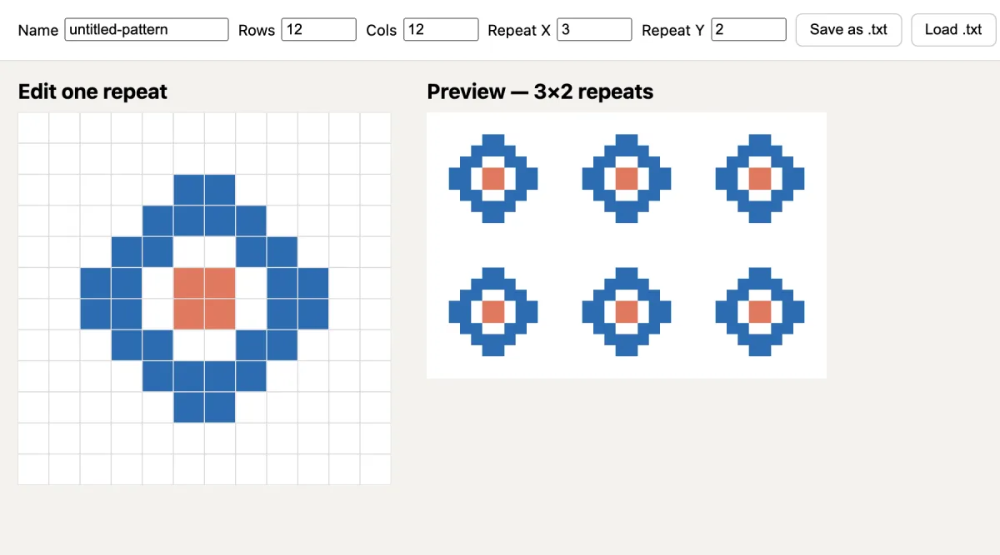
Før: det nakne skjelettet appen startet som. 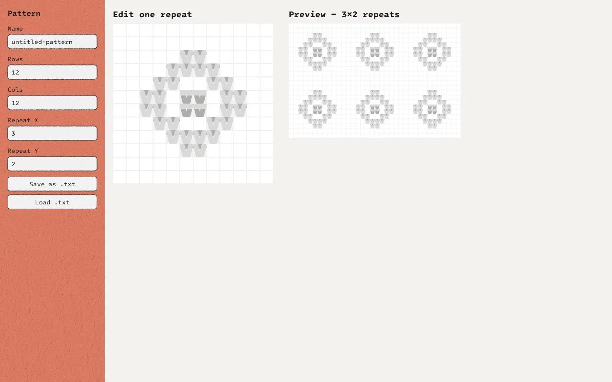
Etter: samme skjerm, restylet av meg i Figma. 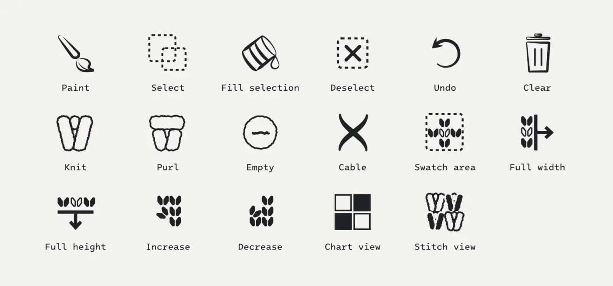
Ikonene, tegnet med samme ujevne strek. Steg 3: Korte reaksjoner ble til konkrete endringer
Jeg designet ved å reagere, slik jeg ville gjort med en fysisk prototype. Ingen av tilbakemeldingene krever at man vet hvordan koden fungerer. De krever at man vet hvordan det skal føles.
Fra funn til endring
- «The colors of the stitches should have a super soft gradient … so a knit on top of purl doesn’t disappear»En nesten usynlig gradient i hver maske
- «I honestly think 6 colors is max for anyone to knit with»En fast palett på seks garn
- «It is annoying trying to remove or add rows»− og + på alle kanter av rutenettet
- «They work now but they can fill the squares more»Større ikoner i knappene
- «The logo is a bit big now»En mindre logo
Steg 4: Et strikkemønster gjentas sjelden i høyden, så vi bygde om hele verktøyet
Midtveis la jeg merke til noe jeg kjenner fra strikkingen selv: «A knitting pattern rarely repeats in the y axis.» Den første versjonen gjentok mønsteret både bortover og oppover, og det så aldri ut som et ekte plagg.
ValgetRutenettet ble en swatch-maker, og et nytt plaggvindu kom til, der swatchene males ut som bord og felt. Endrer du en swatch, endres den overalt den er brukt.
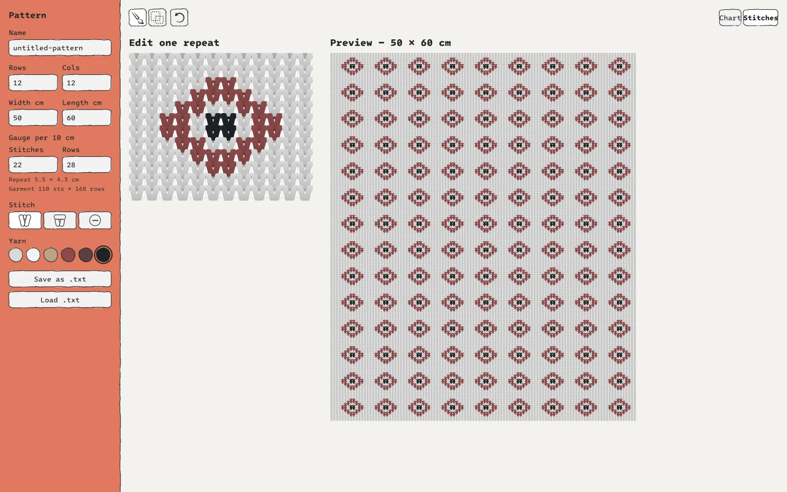
Før: ett motiv, gjentatt i begge retninger. 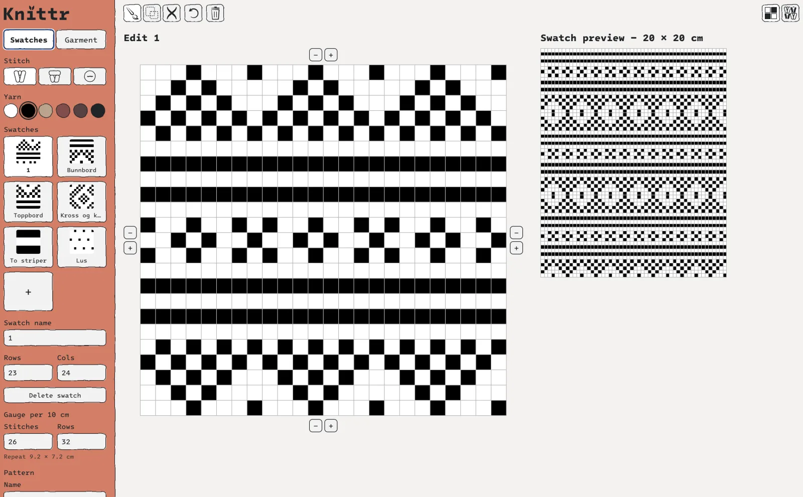
Etter: swatch-makeren, med en av mønsterrutene til setesdalskofta. Steg 5: Fellinger tegnes ved å dra langs kanten av plagget
Økninger og fellinger fikk sin egen løsning, foreslått som en grov idé fra min side: «This can be done by making every row above or below blank, if that makes sense.» Det gjorde det.
DerforDu drar langs kanten av plagget, og maskene over eller under forsvinner. Slik tegner du en halsåpning eller formen på et erme.
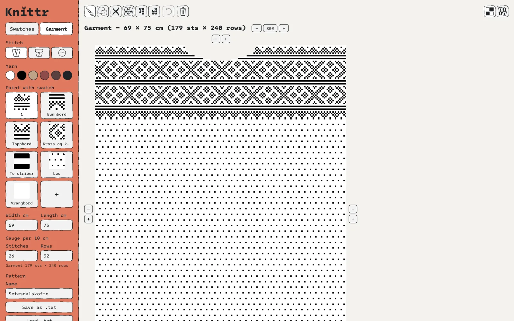
Diagramvisning, med halsåpningen tegnet med fellinger.
Resultatet
Sett som strikk får mønsteret et helt annet uttrykk enn i et diagram
Et diagram viser hvilke masker som skal strikkes, men ikke hvordan plagget faktisk blir. Derfor kan Knittr også vise mønsteret som strikkede masker.
Maskene tegnet jeg selv i Figma. Hver maske har en lys og en mørk side av garnet, radene overlapper, og den lyse delen ligger alltid oppå den mørke. Det gir illusjonen av strikk. Strikkefastheten styrer proporsjonene, så du ser mønsteret slik det faktisk blir strikket.
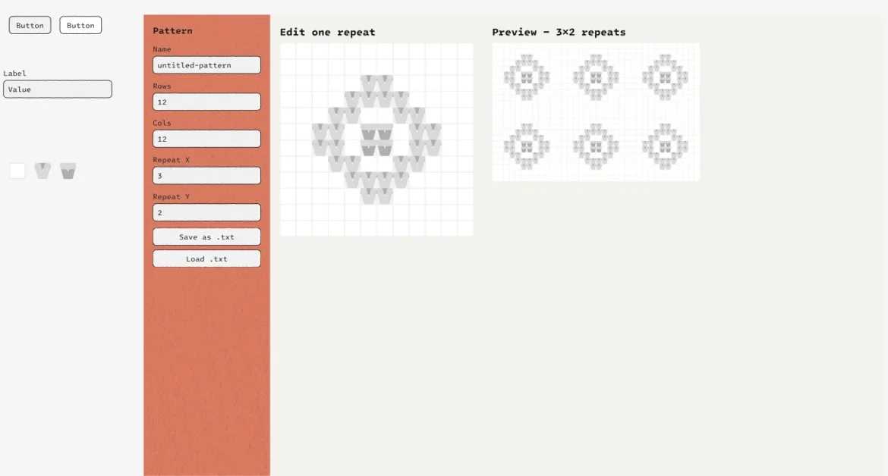
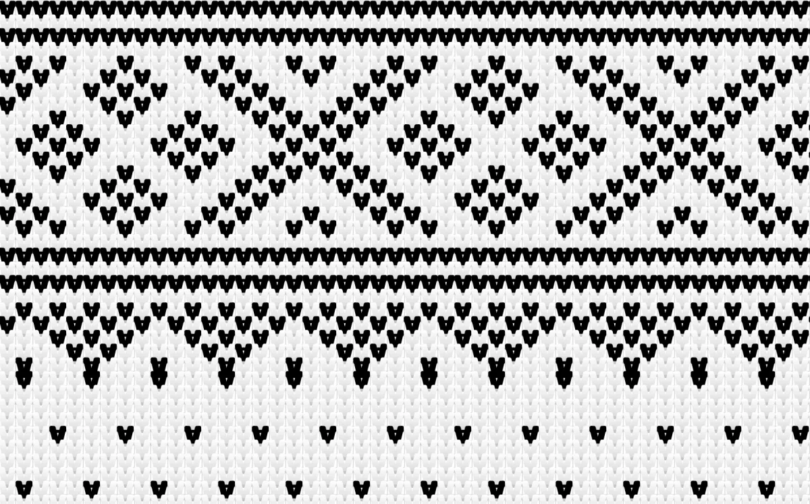
Hva jeg tar med meg
AI flytter grensen for hva jeg kan prototype, men ikke for hvem som bestemmer
Claude kunne bygge nesten hva som helst, men visste ikke at et strikkemønster sjelden gjentas i høyden, at seks farger er nok, eller at logoen var litt for stor.
Det var heller ikke alltid riktig første gang. Da jeg ba om en smalere meny, ble den like bred. Det var å se resultatet og reagere som rettet det opp. Den evnen, å kjenne at noe er feil før man vet hvorfor, er den jeg vil fortsette å bygge på som designer.
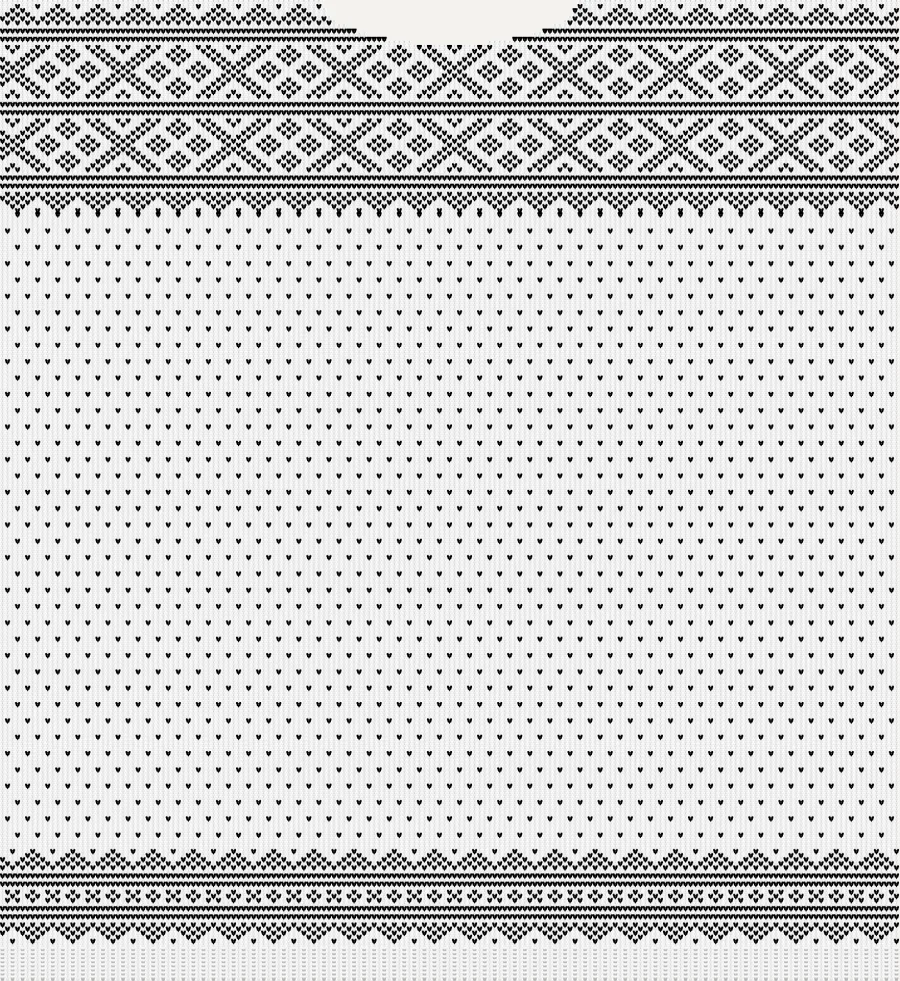